Практичні курси · журнал «ДентАрт» 2023 №2
Сучасне лікування і ведення пацієнтів зі стиранням зубів
State-of-the-art patient-centered treatment & management of tooth wear
«Основними чинниками, що визначають план лікування, є взаємодія факторів ризику, вік пацієнта і ступінь стирання зубів»
Немає єдиної думки щодо того, як найкраще вести пацієнтів зі стиранням зубів з огляду на діагностику, профілактику та лікування у короткостроковій чи довгостроковій перспективі.1 Використання різних термінів для опису однієї і тієї ж клінічної ситуації або подібних термінів для пояснення різних клінічних ситуацій ще більше збило з пантелику, як і розбіжні думки щодо ступеня чи навіть природи стирання зубів, що її можна класифікувати як «фізіологічну» чи «патологічну», і все це спричиняє, мабуть, недостатню увагу до ранніх ознак «ненормальної» ерозії та стирання. Враховуючи недостатнє застосування профілактичних заходів, Узгоджений звіт 2020 року, присвячений «термінології ерозивного стирання зубів», виявився вельми доречним, бо допоміг з'ясувати цю проблему.2
Коли мова йде про лікування, перед нами широкий спектр варіантів, починаючи від недостатнього лікування — до надмірного лікування, із загальною тенденцією до монотерапії, зокрема тих варіантів, що базуються на CAD/CAM або непрямих методах. У соціальних мережах висвітлено більш ніж достатньо клінічних випадків, але вони часто можуть вводити в оману, якщо немає розгляду індивідуальних біомеханічних факторів пацієнта або варіабельності ступеня стирання зубів на різних ділянках зубних рядів в межах однієї ротової порожнини.
Академічні та дослідницькі групи, у свою чергу, наголошують на необхідності застосування консервативних стратегій.3,4 Як і будь-яке інше стоматологічне чи медичне лікування, лікування ерозії зубів має ґрунтуватися на правильно поставленому діагнозі та аналізі факторів ризику, що враховує характер і ступінь втрати твердих тканин, вік пацієнта, а також інші патології. Ці фактори сприяють ефективнішому процесу прийняття рішень при виборі найбільш відповідної стратегії з трьох варіантів: профілактична, превентивна або відновна стратегія.
Тип ураження: оклюзія з виїмками; язичне/вестибулярне зглажування; оклюзійні/язичні фасетки; укорочення ріжучого краю; пришийкові ураження.
Ступінь ураження: початковий, помірний, середній, тяжкий.
Вік пацієнта: підлітковий, молода людина, доросла людина, людина похилого віку.
Відповідність: погана, обмежена, добра, відмінна.
Схема 2. Діаграма демонструє можливий розвиток стирання зубів з часом та періодами загострення або зменшення атриції та ерозії і їх відповідний вплив на втрату твердих тканин. Цю модель слід вважати реалістичнішою, ніж безперервне прогресування стирання зуба в результаті впливу одного фактора ризику.
Фактори ризику
Механічні. Стирання зубів передусім виникає внаслідок впливу хімічних або механічних факторів.3,5,6 Механічні фактори ризику включають абразію — як результат дії стороннього предмета (тобто дія зубної щітки на пришийковий дентин), атрицію — наслідок прямого контакту зубів між собою та ерозію — наслідок впливу екзогенних або ендогенних джерел кислоти.
Найбільш типовими факторами, що підвищують стирання вище фізіологічного рівня, є бруксизм і стискання зубів. Найпоширенішими причинами ерозії є гастроезофагеальна рефлюксна хвороба (ГЕРХ), грижа стравохідного отвору діафрагми, незбалансоване харчування та вживання деяких лікарських препаратів. Менш поширеними, але набагато драматичнішими є стоматологічні наслідки булімії чи анорексії, що викликають часте довільне блювання. На схемі 2 зображено найреалістичнішу модель стирання зубів, яка передбачає динамічний розвиток та різний вплив факторів ризику.
Ерозія, атриція та абразія (як і абфракція, тип втрати коронкової емалі, спричинений стисканням зубів під дією високого оклюзійного навантаження) призводять до специфічних типів уражень, які легко розпізнати, якщо наявна дія одного фактора ризику. Проте дія одного фактора ризику спостерігається рідко. Поширенішою є картина результату впливу кількох факторів ризику, що призводять до менш типових, на зовнішній вигляд, осередків ураження. Така ситуація вимагає комплексного первинного обстеження з метою визначення всіх факторів ризику, їх моніторингу та контролю.
Характерно, що ерозія спричиняє згладжування різних поверхонь зуба (залежно від джерела кислоти) і оклюзійні ураження у формі блюдця, тоді як атриція спричиняє фасетки стирання, локалізовані в точках контакту зубів. Фасетки стирання, таким чином, пов'язані з типом прикусу і типом парафункцій (клінчинг і/або бруксизм з різними комбінаціями центральних або латеро-протрузивних рухів). Абразія виникає в місцях відкритого дентину (наприклад, під час чищення зубів) чи в інших випадках, коли сторонні предмети регулярно контактують із поверхнею зуба.
Аналізуючи дефекти стирання зубів, можна визначити очевидні фактори ризику і краще зрозуміти їх механічні наслідки (наприклад, як ерозія, так і атриція спричиняють втрату твердих тканин зуба, але, ймовірно, залучені різні оклюзійні сили, що впливатиме на вибір матеріалу для реставрації). Однак слід зазначити, що дуже незбалансована дієта, анорексія та булімія часто пов'язані з проблемними особистостями, котрі більш схильні до парафункцій.
Ретельний огляд ділянок стирання та загальний анамнез допоможуть клініцистові обрати реставраційний матеріал, який найбільше підходить відповідно до очікуваного об'єму і товщини реставрації. Основними чинниками, що визначають план лікування, є взаємодія факторів ризику, вік пацієнта і ступінь стирання зубів.
Стратегії лікування
Профілактична. Профілактична стратегія включає широкий набір заходів, що ґрунтуються на визначенні факторів ризику, щоб припинити або принаймні сповільнити прогресування стирання зубів. Профілактика ерозії включає медичні заходи для покращення дієти пацієнта, лікування ГЕРХ або надання допомоги пацієнтам з булімією та анорексією за допомогою фармако- та/або психотерапії. Фінальний варіант профілактики — використання захисних лаків, буферних або ремінералізуючих розчинів. Для зменшення впливу парафункцій сучасним варіантом захисту при середньому ступені бруксизму уві сні є користування нічною капою, тоді як ін'єкції ботуліну вважаються альтернативою для тяжких хворих на бруксизм або пацієнтів, які не дотримуються рекомендацій лікаря.
Превентивна. Коли стирання зубів перевищує норму (наприклад, наявні ділянки відкритого дентину на багатьох зубах у дітей та підлітків), найкращим підходом вважається дотримання виключно протоколу додавання з використанням композитних матеріалів. Превентивна стратегія включає різні протоколи, такі як пряма реставрація у вільній техніці (free-hand), техніка часткового силіконового молдингу або повного молдингу.7-12
Реставраційна. У випадку, якщо профілактична стратегія не виявилася успішною (часто через те, що пацієнт не дотримується профілактичних заходів) або якщо превентивна стратегія не є більше адекватною (наприклад, у випадках тяжкої ерозії та/або атриції), може знадобитися загальне або локальне використання непрямих реставрацій; останній підхід називається реставраційною стратегією. Якщо потрібно вдатися до реставраційної стратегії, оптимальними варіантами вважаються або CAD/CAM, або непрямі методи з використанням монолітної надміцної кераміки, здатної до бондингу.
Розуміння відмінностей між трьома стратегіями, зазначеними вище, сприяє прогресивному, раціональному, біомеханічному підходу до ведення пацієнтів зі стиранням зубів з довгостроковою перспективою. Інтенсивність факторів ризику імовірно збільшуватиметься з часом, і їх наслідки будуть тяжчими. Безумовно, що профілактичні заходи мають впроваджуватися у довгостроковій перспективі та, за необхідності, повинні поєднуватися із превентивною і реставраційною стратегіями.
Комбіновані стратегії. Іншою ключовою стратегією є поєднання матеріалів і клінічних протоколів, оскільки, як зазначалося раніше, стирання зубів уражає різні ділянки зубних рядів ротової порожнини помітно різною мірою. Використання однієї техніки для лікування уражених ділянок усіх зубів ротової порожнини не може бути раціональним підходом для всіх пацієнтів. Через збільшення частоти та поширеності стирання зубів, особливо у підлітків та молоді на всіх соціально-економічних рівнях, запобігання стиранню зубів та його зупинення набули вагомого значення у стоматології.14,15
Обговорення. Превентивна стратегія сфокусована на усуненні дефектів зубів додаванням композиту, використовуючи вільну техніку або техніку молдингу (силіконового ключа). Останній варіант включає техніку часткового молдингу, що допомагає реконструювати щічні та язичні горбики з подальшим відновленням оклюзійної поверхні у вільній техніці, або техніку повного молдингу, що допомагає відновити цілий секстант за допомогою одного «відбитка».16 Превентивні протоколи спрямовані на лікування пацієнтів із середнім ступенем стирання зубів, і варто зазначити, що при тяжкому бруксизмі чи клінчингу цього підходу слід уникати.
Перевага цього підходу полягає в тому, що він добре адаптується як до досвіду лікаря-практика, що працює у прямій техніці, так і до ступеня стирання зубів у межах показань до застосування превентивної стратегії. Ця комбінована стратегія є значним кроком уперед у веденні пацієнтів зі стиранням зубів, тому що вона усуває потребу препарування додаткових зубів — на противагу попереднім переконанням, згідно з якими всі реставрації повинні бути виконані з одного матеріалу, що не враховує того факту, що тип стирання, ступінь та етіологія у кожного пацієнта є індивідуальними.
Випадок 1. Превентивна та відновна стратегія при тотальній реабілітації
Скарги та анамнез. Пацієнт, 41 рік, звернувся на консультацію з приводу естетичних проблем, його головними занепокоєннями були вплив стирання зубів на зовнішній вигляд усмішки (зокрема нерівність ріжучих країв та вкорочення зубів), а також дисколорити (фото 1-6). Його турбувала періодична надмірна чутливість зубів, але не було функціонального дискомфорту або проблем зі скронево-нижньощелепним суглобом.
Медична історія пацієнта не фіксувала жодних причин захворювання. Під час клінічного обстеження виявлено генералізоване стирання зубів середнього ступеня внаслідок нічного та денного бруксизму, а також ерозії, спричиненої частим уживанням газованих напоїв. Пацієнта було поінформовано про необхідність контролю факторів ризику та про те, що йому також потрібно буде користуватися нічною капою після реставрації зубів.
Мета лікування. Після отримання згоди пацієнта на лікування за комбінованою стратегією (пряма композитна реставрація нижніх зубів і керамічні вініри на верхні зуби) було зроблено цифрові відбитки для аналізу клінічного випадку (фото 7-15) та визначено цілі лікування:
- покращення лінії усмішки і зовнішнього вигляду зубів;
- покращене різцеве ведення;
- нове ВРО (вертикальний розмір оклюзії / висота прикусу);
- покращення оклюзії.
Підвищення ВРО. У цьому клінічному випадку було вирішено відновити ВРО в максимальному міжгорбиковому контакті (ММК), що майже ідентично до центрального співвідношення (ЦС). У випадку ретрузії центрального співвідношення може бути обмежена можливість збільшення вертикального співвідношення оклюзії та збереження переднього ведення, що є необхідною умовою у такому веденні стирання зубів.13 Цей останній аспект визначає фактично допустиме збільшення вертикального співвідношення оклюзії і товщину реставрацій бокових зубів. Збільшення вертикального співвідношення оклюзії на рівні різців від 3-4 мм вважається цілком безпечним. Таким чином, немає потреби в попередній перевірці прикусу. Загалом центральне співвідношення не слід більше використовувати як еталон у тотальній реабілітації стоматологічних пацієнтів.20,21
Лікування: пряма композитна реставрація у вільній техніці за восковою моделлю була завершена за три відвідування (фото 16-35), з іншими трьома візитами для встановлення вінірів на верхні зуби (фото 36-43). Відбитки для нічної капи були зняті у перший візит, приблизно через 2 тижні після завершення лікування.
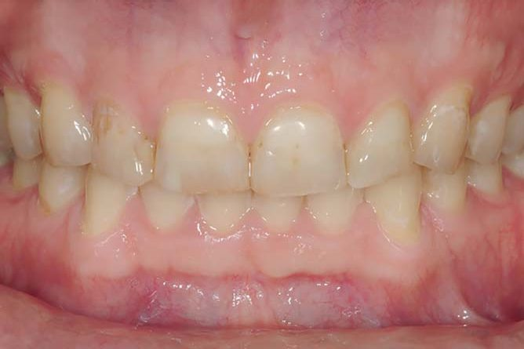
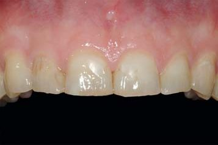
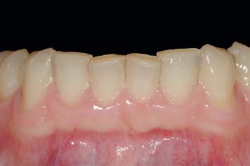
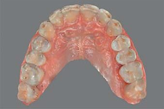
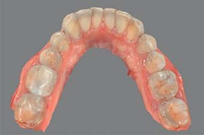
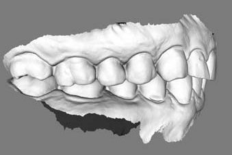
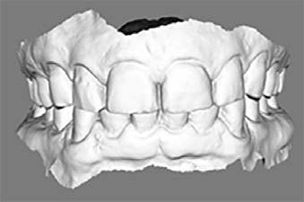
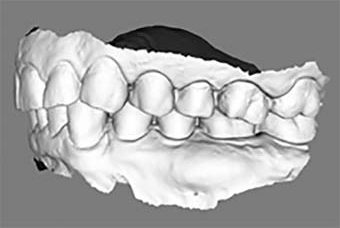
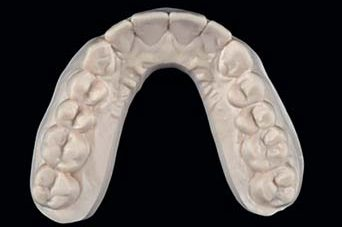
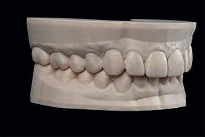
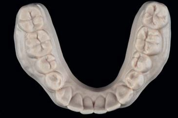
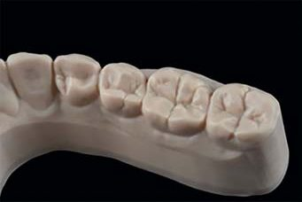
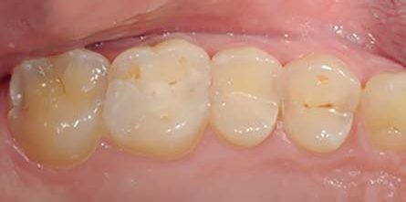
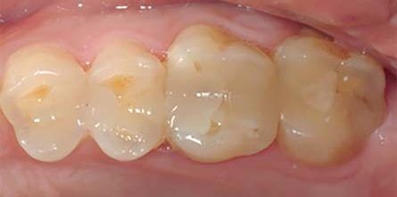
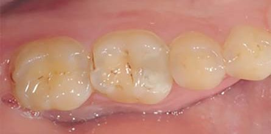
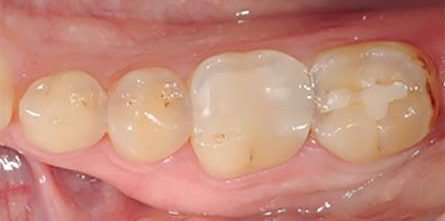
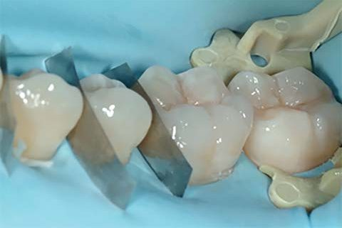
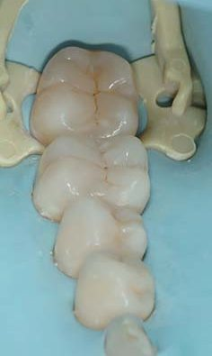
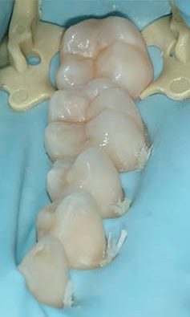
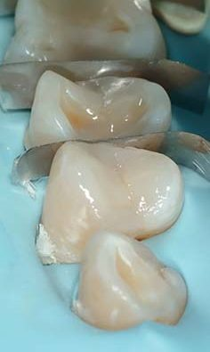
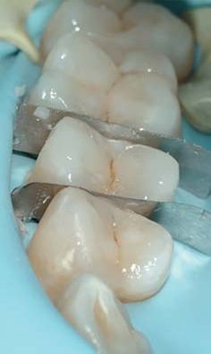
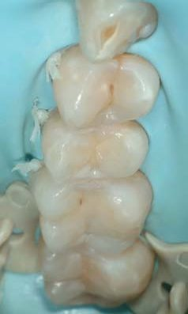
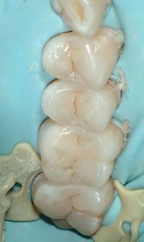
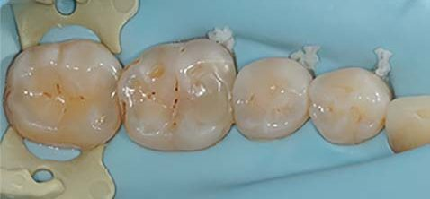
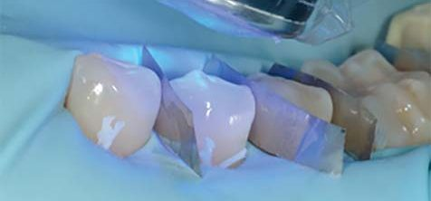
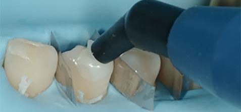
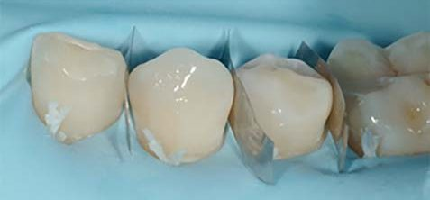
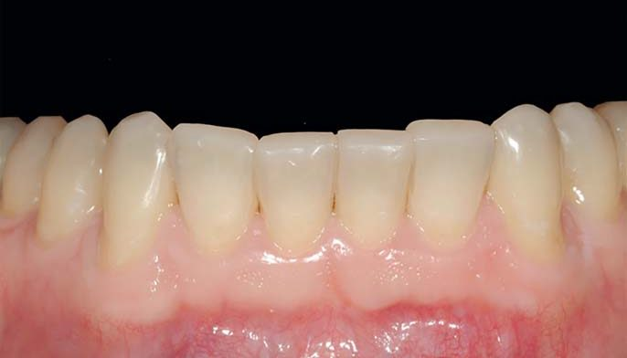
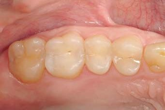
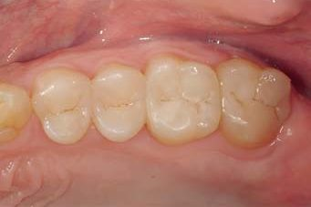
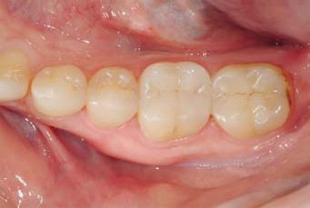
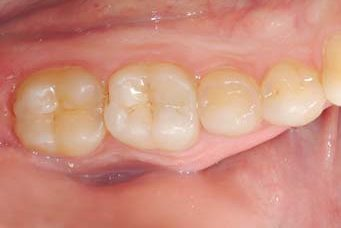
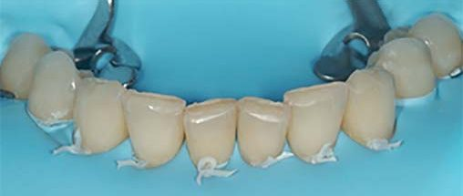
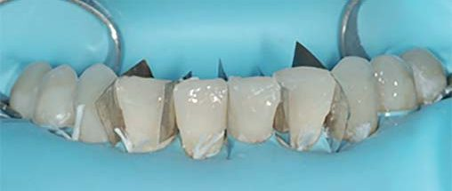
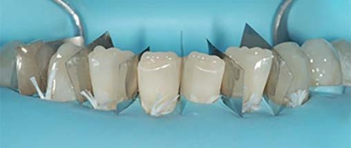
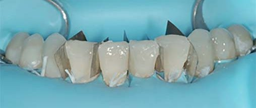
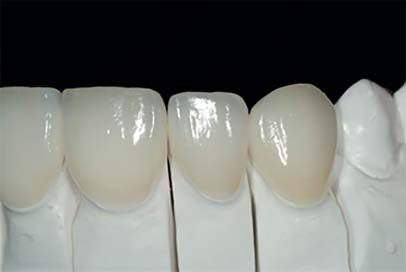
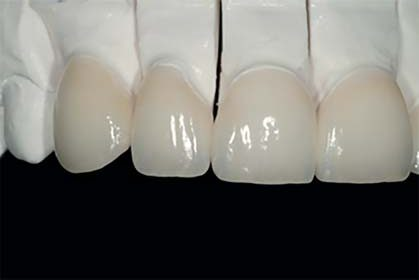
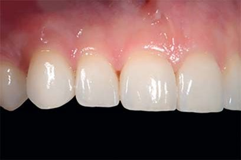
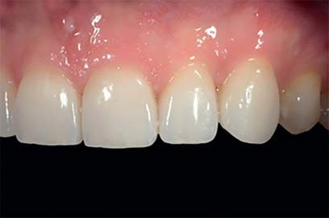
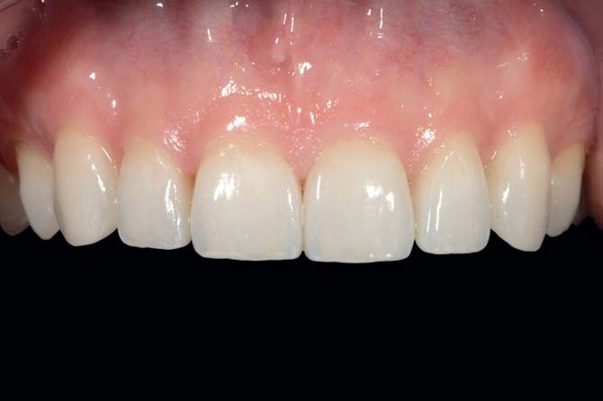
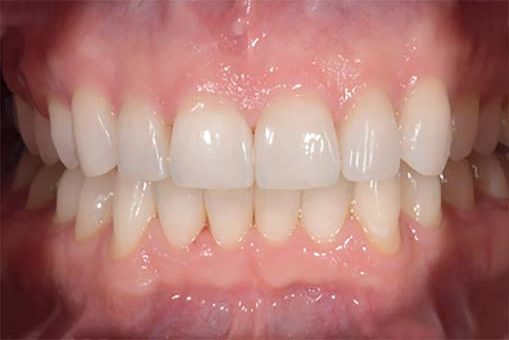
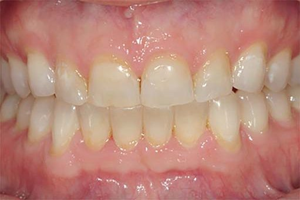
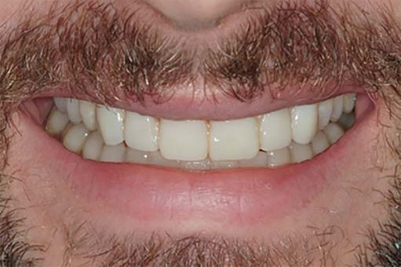
Фото 1. Огляд усмішки пацієнта. Фото 2 а, б. При огляді зубів верхньої і нижньої щелеп виявлено стирання та дисколорити. Фото 3-6. На бокових зубах виявлено стирання середнього ступеня, головним чином через атрицію з ерозією, що пов'язано з частим споживанням газованих напоїв. Фото 7-11. Цифрові відбитки, виготовлені для аналізу початкового оклюзійно-функціонального стану, визначення нового вертикального співвідношення оклюзії та покращення різцевого ведення і усмішки. Фото 12-15. Виготовлені моделі демонструють відновлену анатомію та функцію бокових зубів, покращену лінію усмішки і різцеве ведення. Нове вертикальне співвідношення оклюзії дозволяє відреставрувати бокові зуби без попереднього препарування (виключно за рахунок додавання реставраційного матеріалу). Фото 16-19. Відновлення оклюзійної поверхні бокових зубів шляхом прямої реставрації у вільній техніці за восковою моделлю. Зуби були піскоструминно оброблені перед нанесенням мультифункціонального тотально-протравлюючого адгезиву Optibond FL (Kerr). Фото 20. Після завершення прямої реставрації лівого секстанта нижнього зубного ряду. Фото 21, 22. Завершення відновлення бокових нижніх зубів шляхом прямої композитної реставрації без попереднього препарування. Фото 23, 24. Враховуючи середній ступінь помітних ділянок ураження, спричинених атрицією та ерозією, можна провести відновлення шляхом прямої композитної реставрації. Непрямий, більш об'ємний та інвазивний метод відновлення не є необхідним при такому типі стирання. Фото 25, 26. Відновлено правий і лівий секстанти верхнього зубного ряду. Фото 27-30. Воскова модель визначає обсяг доповнення по ріжучому краю нижніх передніх зубів при використанні прямих реставраційних систем (відтінок Skin White композиту Inspiro, Едельвейс). Нова висота зубів може бути виміряна за допомогою штангенциркуля або вирахувана за силіконовим шаблоном. Фото 31. Вигляд нижніх передніх зубів після лікування; слід відзначити відновлену висоту іклів, що забезпечить краще латеральне ведення. Фото 32-35. Завершена пряма реставрація бокових секстантів у вільній техніці за восковою моделлю, що поліпшує функціонування та захищає ділянки стирання від прогресування, з усіма перевагами техніки, котра не передбачає попереднього препарування. Фото 36. Після першого реставраційного етапу — огляд усмішки пацієнта, включаючи нове вертикальне співвідношення оклюзії та прикус, досягнутий шляхом прямої композитної реставрації чотирьох бокових секстантів та передніх зубів нижньої щелепи. Фото 37. Вигляд усмішки демонструє тимчасові конструкції (вініри), що були використані для оцінки нового зовнішнього вигляду зубів; пацієнтові зуби здавалися занадто довгими, і він вимагав їх укоротити. Фото 38-41. Для відновлення верхніх передніх зубів були обрані вініри — з метою задовольнити естетичні вимоги пацієнта. Також вініри є більш стійким варіантом для зменшення ризику подальшого стирання ріжучого краю зубів та ймовірного сколу композиту. Фото 42, 43. Завершене лікування задовольняє естетичні вимоги пацієнта, забезпечує збереження природних тканин, простоту реставрації за мінімальних затрат. Таке лікування дозволяє легше досягти згоди на лікування пацієнта із середнім ступенем стирання зубів і запобігти багатьом випадкам прогресування — на противагу високій вартості тотальних реабілітацій у непрямій техніці.
- Профілактичні заходи повинні завжди впроваджуватися першими, також і поєднання превентивних та реставраційних методів; контроль факторів ризику, що спричиняють стирання зубів, надзвичайно важливий для довгострокового успіху.
- Комплексний план лікування з використанням аналогової або цифрової воскової моделі необхідний для успішного лікування клінічних випадків стирання зубів шляхом або превентивного, або реставраційного протоколу.
- Планування лікування має починатися з оцінки функціонування та естетики передніх зубів, проте власне лікування часто слідує зворотному підходу: спочатку реставруються бокові зуби, а потім передні.
Випадок 2. Превентивне лікування з віддаленими результатами спостереження
Первинне лікування. Пацієнт, лікар-стоматолог, уперше звернувся до автора на консультацію у 2010 році з приводу середньої та тяжкої ерозії нижніх бокових зубів. Також була незначна стертість нижніх передніх зубів і верхніх бокових зубів, що можна було б контролювати простими профілактичними заходами. Цей загальний підхід вважається доцільним через локалізований характер стирання зубів (фото 44-46).
У цьому клінічному випадку було проведено реставрацію в позиції максимального міжгорбикового контакту. Бокові зуби на нижній щелепі були проліковані за два клінічні сеанси (протягом одного дня), щоб по закінченні першого дня лікування пацієнт мав досить стабільну оклюзію (фото 47-58).
На другому етапі лікування піднебінні поверхні верхніх передніх зубів були відновлені в прямій техніці з метою компенсації підвищеного вертикального співвідношення оклюзії, що виникло через використання повністю адитивної техніки, яка застосовувалася на нижніх бокових зубах (фото 59). Незначну порцію композиту було додано по ріжучому краю верхнього лівого центрального різця (зуб 21), щоб вирівняти лінію усмішки (фото 60, 61). Подібно до першого клінічного випадку були застосовані прямий метод та вільна техніка реставрації за восковою моделлю.
Віддалені результати лікування. Пацієнт повернувся у 2021 році для повторного огляду (за цей час не було жодного проміжного втручання, за винятком профілактики виникнення ерозій шляхом користування нічною капою та дотримання дієти з обмеженим споживанням кислот). Віддалені результати через 11 років демонструють, що прямі композитні реставрації були виконані успішно в сприятливих біофункціональних умовах без парафункцій чи ерозії. Однак стирання призвело до втрати анатомії та до незначного оголення дентину в других молярах, що вимагає нового додавання композиту (фото 62-64). З досвіду автор знає, що до тих пір, доки не було очевидного руйнування внутрішнього адгезивного з'єднання, було можливо відновити реставрацію без повної заміни існуючого композиту.
Підготовку поверхні зроблено шляхом піскоструминної обробки емалі та поверхні композиту перед нанесенням мультифункціонального адгезиву, наприклад Optibond FL (Kerr) або Clearfil SE Bond (Kuraray), і зносостійкого високонаповненого емалевого композиту Inspiro (Едельвейс), відтінок Skin and Ice (фото 65-70). Як і в 2010 році, лікування складалося з незначного збільшення вертикального розміру оклюзії з наступною модифікацією піднебінної поверхні верхніх передніх зубів для збереження контактів та переднього ведення (фото 71-74).
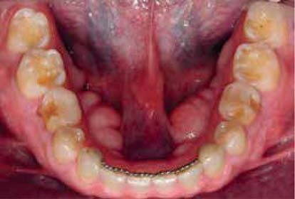
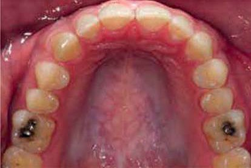
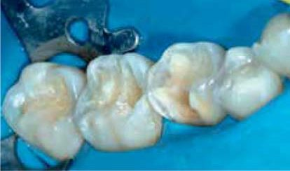
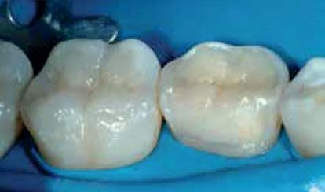
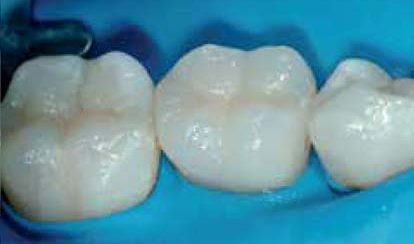
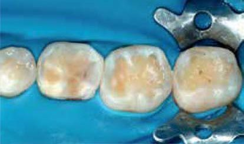
Фото 44-46. На фото до лікування виявлено середній ступінь ерозії нижніх бокових зубів та незначне локалізоване ушкодження на верхній зубній дузі. Лівий центральний різець (зуб 21) укорочений по ріжучому краю. Зверніть увагу на наявність других тимчасових молярів, в яких виявляється обмежена резорбція коренів. Фото 47-51. Реставрації були виконані у біламінарній техніці (двошаровій), відповідно до Концепції Натуральних Шарів:22 дентин внесено в один або максимум у два шари, тоді як емаль внесена в один шар і змодельована у вільній техніці (Miris2 Dentin S4 і Enamel White, Coltene). Фото 52-58. Завершені пряма композитна реставрація з ізоляцією рабердамом та процес інтеграції в оклюзії. Були мінімальні зміни анатомії оклюзійної поверхні через функціональну рівновагу, що забезпечує належний захист для ерозованих тканин і відповідний прикус. Фото 59-61. Прямі композитні реставрації були зроблені на піднебінній поверхні верхніх передніх зубів з метою компенсації підвищення висоти оклюзії (ВРО). На цьому етапі було скореговано довжину лівого центрального різця (зуб 21). Фото 62-64. Одинадцять років після лікування, прямі композитні реставрації на нижній щелепі у задовільному стані. Однак на ділянках, де шар матеріалу був тоншим, відбулося оголення дентину. Фото 65-68. Корекція реставрації, зробленої 11 років тому, включає піскоструминну обробку поверхні композиту та емалі, нанесення мультифункціонального адгезиву і внесення нового композитного матеріалу для відновлення оклюзійних контурів та функції. Відтінки з поверхневим ефектом доповнюють цю просту процедуру відновлення. Фото 69, 70. Нижні бокові секстанти після лікування. Фото 71, 72. Піднебінна поверхня верхніх передніх зубів знову була модифікована для пристосування до нової зміни вертикального співвідношення оклюзії, що спричинено перебудовою морфології бокових зубів. Через добре відомий компенсаторний ефект у відповідь на підвищення ВРО (нейромускулярна адаптація і потім інтрузія) констатуємо, що первинне лікування та оновлення підвищення висоти прикусу є непростим для всіх. Фото 73, 74. Завершена реновація клінічного випадку демонструє ефективність протоколів лікування середнього ступеня втрати твердих тканин за відсутності значних ерозій або факторів ризику парафункцій.
«Використання однієї техніки для лікування уражених ділянок усіх зубів ротової порожнини не є раціональним підходом для всіх пацієнтів»
Висновки
Стирання зубів уражає різні ділянки зубних дуг ротової порожнини на різному рівні, вимагаючи таким чином специфічного підходу до лікування та комбінацій стратегій. Стирання зубів — це процес, що постійно прогресує, тому обрана стратегія лікування повинна регулярно перевірятися й адаптуватися до проблем стабілізації або прогресування. Відсутність належної уваги до прогресуючого стирання зубів може призвести до серйозних біомеханічних та естетичних ускладнень.
Профілактичні і превентивні методи допомагають вирішити складні випадки і/або задовольнити особливі естетичні чи біомеханічні потреби, а позаяк довгострокове застосування реставраційних методів набагато складніше й дорожче, то їх зазвичай не рекомендовано використовувати для звичайних випадків.
Переклад — Юлія і Анна Бодакви
Література
- Muts E. J., van Pelt H., Edelhoff D., Krejci I., Cune M. Tooth wear: a systematic review of treatment options. J Prosthet Dent. 2014 Oct; 112(4): 752–759.
- Schlueter N., Amaechi B. T., Bartlett D., et al. Terminology of erosive tooth wear: Consensus Report of a Workshop Organized by the ORCA and the Cariology Research Group of the IADR. Caries Res. 2020; 54(1): 2–6.
- Carvalho T. S., Colon P., Ganss C., et al. Consensus Report of the European Federation of Conservative Dentistry: erosive tooth wear — diagnosis and management. Clin Oral Investig. 2015 Sep; 19(7): 1557–1561.
- Loomans B., Opdam N., Attin T., et al. Severe tooth wear: European Consensus Statement on Management Guidelines. J Adhes Dent. 2017; 19(2): 111–119.
- Lussi A., Ganss C., eds. Erosive tooth wear: from diagnosis to therapy. Monogr Oral Sci. Basel: Karger; 2014. P. 108–122.
- Litonjua L. A., Andreana S., Bush P. J., Cohen R. E. Tooth wear: attrition, erosion and abrasion. Quintessence Int. 2003 Jun; 34(6): 435–446.
- Dietschi D., Argente A. A comprehensive and conservative approach for the restoration of abrasion and erosion. Part I. Eur J Esthet Dent. 2011 Spring; 6(1): 20–33.
- Dietschi D., Argente A. A comprehensive and conservative approach for the restoration of abrasion and erosion. Part II. Eur J Esthet Dent. 2011 Summer; 6(2): 142–159.
- Mehta S. B., Banerji S., Millar B. J., Suarez-Feito J. M. Current concepts on the management of tooth wear: part 2. Br Dent J. 2012 Jan 27; 212(2): 73–82.
- Mehta S. B., Banerji S., Millar B. J., Suarez-Feito J. M. Current concepts on the management of tooth wear: part 3. Br Dent J. 2012 Feb 10; 212(3): 121–127.
- Mehta S. B., Banerji S., Millar B. J., Suarez-Feito J. M. Current concepts on the management of tooth wear: part 4. Br Dent J. 2012 Feb 24; 212(4): 169–177.
- Mehta S. B., Banerji S., Millar B. J., Suarez-Feito J. M. Current concepts on the management of tooth wear: part 1. Br Dent J. 2012 Jan 13; 212(1): 17–27.
- Dietschi D., Saratti C. M., Erpen S. Interceptive treatment of tooth wear. Berlin: Quintessence Publishing; 2022.
- Bartlett D. W., Lussi A., West N. X., Bouchard P., Sanz M., Bourgeois D. Prevalence of tooth wear on buccal and lingual surfaces and possible risk factors in young European adults. J Dent. 2013 Nov; 41(11): 1007–1013.
- Kreulen M., Van't Spijker A., Rodriguez J. M., Bronkhorst E. M., Creugers N. H. J., Bartlett D. W. Systematic review of the prevalence of tooth wear in children and adolescents. Caries Res. 2010; 44(2): 151–159.
- Dietschi D., Saratti C. M. Interceptive treatment of tooth wear: a revised protocol for the full molding technique. Int J Esthet Dent. 2020; 15: 264–286.
- El Wazani B., Dodd M. N., Milosevic A. The signs and symptoms of tooth wear in a referred group of patients. Br Dent J. 2012 Sep; 213(6): E10.
- Abduo J. Safety of increasing vertical dimension of occlusion: a systematic review. Quintessence Int. 2012 May; 43(5): 369–380.
- Abduo J., Lyons K. Clinical considerations for increasing occlusal vertical dimension: a review. Aust Dent J. 2012 Mar; 57(1): 2–10.
- Saratti C. M., Rocca G. T., Vaucher P., et al. Functional assessment of the stomatognathic system. Part 2: the role of dynamic elements of analysis. Quintessence Int. 2021.
- Saratti C. M., Rocca G. T., Vaucher P., et al. Functional assessment of the stomatognathic system. Part 1: the role of static elements of analysis. Quintessence Int. 2021 Oct; 52(10): 920–932.
- Dietschi D. Learning and applying the natural layering concept. 2009.